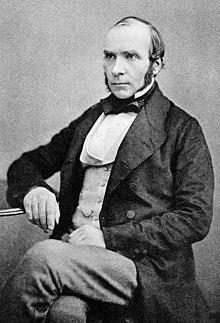
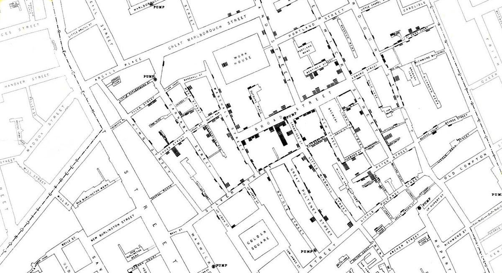
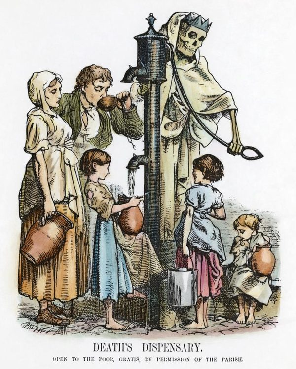

Wiem, skąd pochodzi słowo „logika” i dlaczego jest ważna w matematyce i filozofii. I know where the word “logic” comes from and why it matters in maths and philosophy.
Potrafię wymienić cztery części myślenia komputacyjnego. I can name the four parts of computational thinking.
Wiem, co to jest zdanie prawdziwe i fałszywe. I know what a true and a false statement is.
Potrafię użyć „jeżeli… to… inaczej…”. I can use “if… then… otherwise…”.
Rozumiem, że kolejność kroków ma znaczenie. I understand that the order of steps matters.
1. Logika to myślenie krok po kroku / Logic is thinking step by step
Logika to sposób myślenia, w którym z tego, co wiemy, wyciągamy pewne wnioski. Pomaga sprawdzić, czy coś jest prawdą, czy fałszem, i zdecydować, co zrobić dalej.
Logic is a way of thinking where we use what we know to reach sure conclusions. It helps us check whether something is true or false, and decide what to do next.
Komputer jest bardzo „logiczny”: robi dokładnie to, co mu każesz, krok po kroku. Nie zgaduje i nie domyśla się. Dlatego na konkursie InstaLogik liczy się logiczne myślenie, a nie szybkie pisanie.
A computer is very “logical”: it does exactly what you tell it, step by step. It never guesses. That is why InstaLogik is about logical thinking, not fast typing.
🧠 Twój mózg też używa logiki / Your brain uses logic too
Za planowanie i podejmowanie decyzji odpowiada głównie przednia część mózgu, tuż za czołem. Naukowcy nazywają ją korą przedczołową (prefrontal cortex). Używasz jej codziennie:
Planning and making decisions happen mostly in the front part of your brain, just behind your forehead. Scientists call it the prefrontal cortex. You use it every day:
Jeżeli pada deszcz, to biorę kurtkę. If it is raining, then I take a coat.
Najpierw pakuję zeszyty, potem zamykam plecak. First I pack my books, then I close my bag.
Jeżeli autobus się spóźnia, to idę pieszo, inaczej czekam. If the bus is late, then I walk, otherwise I wait.
Ta część mózgu rozwija się aż do dorosłości, a ćwiczenie logicznego myślenia, na przykład w konkursie InstaLogik, pomaga ją trenować.
This part of the brain keeps developing until adulthood, and practising logical thinking, for example in InstaLogik, helps to train it.
2. Skąd się wzięło słowo „logika”? / Where does the word “logic” come from?
λόγος (logos)
słowo / wordmyśl / thoughtrozum / reason
Słowo logika pochodzi od greckiego słowa logos, które znaczy „słowo”, „myśl” i „rozum”. Logika to więc sztuka dobrego, rozumnego myślenia.
The word logic comes from the Greek word logos, which means “word”, “thought” and “reason”. So logic is the art of thinking well and sensibly.
Logika narodziła się ponad 2300 lat temu w starożytnej Grecji. Filozof Arystoteles jako pierwszy spisał jej zasady. Uważał, że logika to narzędzie, którego potrzebuje każda nauka.
Logic was born over 2,300 years ago in ancient Greece. The philosopher Aristotle was the first to write down its rules. He saw logic as a tool that every kind of knowledge needs.
🏛️ Filozofia / Philosophy
Filozofowie zadają wielkie pytania: co jest prawdą? jak odróżnić dobry argument od złego? Logika pomaga im sprawdzić, czy wniosek naprawdę wynika z tego, co wiemy.
Philosophers ask big questions: what is true? how can we tell a good argument from a bad one? Logic helps them check that a conclusion really follows from what we know.
📐 Matematyka / Mathematics
W matematyce nic nie przyjmujemy „na oko”. Każdy wynik trzeba udowodnić krok po kroku, a każdy krok musi być logiczny. Już starożytny Grek Euklides budował geometrię w ten sposób. W XIX wieku matematycy, m.in. George Boole, pokazali, że samą logikę można zapisać jak matematykę.
In maths we never accept anything “by guessing”. Every result must be proved step by step, and every step must be logical. The ancient Greek Euclid built geometry this way. In the 19th century mathematicians, including George Boole, showed that logic itself can be written like maths.
💻 Informatyka / Computing
Każdy komputer jest zbudowany z milionów maleńkich przełączników, które działają według logiki: prawda = 1, fałsz = 0. Każdy program to logiczne polecenia: „jeżeli… to… inaczej…”.
Every computer is built from millions of tiny switches that work by logic: true = 1, false = 0. Every program is made of logical instructions: “if… then… otherwise…”.
Logika łączy filozofię, matematykę i informatykę. Gdy piszesz program w InstaLogik, robisz to samo co Arystoteles i Euklides: wyciągasz pewne wnioski krok po kroku.
Logic links philosophy, maths and computing. When you write a program in InstaLogik, you do what Aristotle and Euclid did: reach sure conclusions step by step.
3. Myślenie komputacyjne / Computational thinking
Myślenie komputacyjne to sposób rozwiązywania problemów tak, jak robią to informatycy. Nie potrzeba do niego komputera! Składa się z czterech kroków:
Computational thinking is a way of solving problems like computer scientists do. You do not need a computer for it! It has four parts:
🧩
Rozkład na częściDecomposition
Dziel duży problem na małe, łatwiejsze kawałki.
Break a big problem into small, easier pieces.
🔍
Szukanie wzorcówPattern recognition
Zauważ, co się powtarza albo co jest podobne.
Notice what repeats or what is similar.
🎯
AbstrakcjaAbstraction
Skup się na tym, co ważne, a pomiń szczegóły.
Focus on what matters and ignore the details.
📋
AlgorytmAlgorithm
Zapisz rozwiązanie jako kroki w ustalonej kolejności.
Write the solution as steps in a fixed order.
Prawdziwa historia: dr John Snow i cholera / A true story: Dr John Snow and cholera

Dr John Snow (1813–1858)
(To nie ten Jon Snow z „Gry o tron”! Ten był prawdziwym lekarzem.) (Not Jon Snow from “Game of Thrones”! This one was a real doctor.)
1
🏚️
Londyn, 1854
Dzielnica Soho. Domy stoją ciasno, nie ma kranów ani łazienek. Kilka rodzin dzieli jedną toaletę, a nieczystości trafiają do dołów w ziemi. Wodę przynosi się w wiadrach z pompy na rogu ulicy.
The Soho district. Houses are packed together, with no taps or bathrooms. Several families share one toilet, and waste goes into pits in the ground (cesspits). People fetch water in buckets from a pump on the street corner.
2
😷
Epidemia / The outbreak
Wybucha cholera. W kilka dni umierają setki ludzi. Wszyscy myślą, że winne jest „złe powietrze” i smród.
Cholera breaks out. Hundreds of people die within days. Everyone thinks “bad air” and the smell are to blame.
3
🕵️
Zbieranie danych / Collecting data
Dr Snow ma inną hipotezę: woda. Razem z miejscowym duchownym, Henrym Whiteheadem, chodzi od domu do domu i zapisuje, kto zachorował i skąd brał wodę.
Dr Snow has a different idea (a hypothesis): the water. With a local clergyman, Henry Whitehead, he goes from house to house, writing down who fell ill and where they got their water.
4
🗺️
Mapa / The map
Każde zachorowanie zaznacza kreską na mapie. Widać wyraźny wzorzec: wokół jednej pompy na Broad Street.
He marks each case with a line on a map. A clear pattern appears: around one pump on Broad Street.
5
🚰
Rozwiązanie / The solution
Snow przekonuje władze parafii, by zdjęły rączkę pompy. Nikt nie może już z niej pić, a nowych zachorowań jest coraz mniej.
Snow persuades the parish authorities to remove the pump handle. Nobody can drink from it any more, and new cases become fewer and fewer.

Prawdziwa mapa Johna Snowa (fragment). Każda czarna kreska to jedna osoba, która zmarła. Znajdź napis „PUMP” przy BROAD STREET! / John Snow’s real map (detail). Each black line is one person who died. Find the word “PUMP” on BROAD STREET!
Zagraj w detektywa! / Play detective! Klikaj przyciski po kolei. Click the buttons in order.
🤔 Zagadka: dlaczego w browarze i w przytułku prawie nikt nie zachorował, choć były blisko pompy? / Puzzle: why did almost nobody fall ill in the brewery and the workhouse, although they were near the pump?
Miały własne studnie, więc nie piły wody z pompy na Broad Street. Robotnicy w browarze pili też piwo warzone na miejscu. Te wyjątki tylko potwierdziły hipotezę Snowa: chorowali ci, którzy pili wodę z tej jednej pompy.
They had their own wells, so they did not drink water from the Broad Street pump. The brewery workers also drank beer brewed on site. These exceptions supported Snow’s hypothesis: the people who fell ill were the ones who drank water from that one pump.

„Death’s Dispensary” (Apteka Śmierci), rysunek z 1866 r. / cartoon from 1866
🤔 Co oznacza ten rysunek? / What does this cartoon mean?
Przyjrzyj się: kto stoi przy pompie? Co robią ludzie? Dlaczego artysta narysował śmierć właśnie przy pompie z wodą?
Look closely: who is standing by the pump? What are the people doing? Why did the artist draw Death right next to a water pump?
Pokaż odpowiedź / Show the answer
Artysta ostrzega, że brudna woda z ulicznych pomp może zabijać, a najbardziej narażeni są biedni ludzie, którzy nie mają innej wody. Kilkanaście lat po odkryciu Snowa ludzie zaczęli to rozumieć.
The artist warns that dirty water from street pumps can kill, and poor people with no other water are most at risk. Some years after Snow’s discovery, people began to understand this.
Jak myślał John Snow? / How did John Snow think?
🧩 Rozkład: zamiast pytać „skąd cała choroba?”, sprawdzał każdy dom osobno: kto zachorował i skąd brał wodę. Decomposition: instead of asking “where does the whole disease come from?”, he checked each house: who fell ill and where they got water.
🔍 Wzorzec: zachorowania skupiały się wokół jednej pompy, a miejsca z własną studnią były zdrowe. Pattern: the cases clustered around one pump, and places with their own well stayed healthy.
🎯 Abstrakcja: pominął to, co nieważne (smród, plotki, kolory domów) i skupił się na jednym: skąd ludzie brali wodę. Abstraction: he ignored what did not matter (the smell, rumours, the colour of houses) and focused on one thing: where people got their water.
📋 Rozwiązanie: jeżeli ludzie piją wodę z tej pompy, to chorują, więc trzeba zabrać rączkę pompy. Solution: if people drink water from this pump, then they fall ill, so remove the pump handle.
Ciekawostki / Fun facts
Później okazało się, że tuż obok studni pod pompą był dół z nieczystościami, który przeciekał do wody. Fuj! 💩 / Later it turned out that a cesspit right next to the well under the pump was leaking into the water. Yuck!
Ludzie długo nie wierzyli Snowowi. Minęło wiele lat, zanim uznano, że miał rację. Dziś nazywa się go ojcem epidemiologii, czyli nauki o tym, jak rozprzestrzeniają się choroby. / People did not believe Snow for a long time. It took many years before they accepted he was right. Today he is called the father of epidemiology, the study of how diseases spread.
W Londynie przy dawnej Broad Street (dziś Broadwick Street) stoi kopia tej pompy, celowo bez rączki. / In London, on the old Broad Street (now Broadwick Street), a copy of the pump stands, on purpose without a handle.
Interaktywna mapa jest uproszczona. Fotografia, mapa i rysunek pochodzą z XIX wieku i są w domenie publicznej. / The interactive map is simplified. The photograph, map and cartoon are from the 19th century and are in the public domain.
4. Prawda czy fałsz? / True or false?
Zdanie logiczne jest albo prawdziwe, albo fałszywe. Kliknij swoją odpowiedź.
A logical statement is either true or false. Click your answer.
5. Znaki porównania / Comparison signs
W programach InstaLogik porównujesz liczby. Wynik porównania to zawsze TAK (prawda) albo NIE (fałsz).
In InstaLogik programs you compare numbers. The answer is always YES (true) or NO (false).
=równe equal to
≠różne not equal to
<mniejsze less than
>większe greater than
≤mniejsze lub równe less than or equal to
≥większe lub równe greater than or equal to
Pułapka! Czy 5 ≤ 5? TAK, bo 5 jest równe 5. Czy 5 < 5? NIE. Na konkursie ta różnica często decyduje o punktach.
Trap! Is 5 ≤ 5? YES, because 5 equals 5. Is 5 < 5? NO. In the competition this difference often decides the points.
6. Jeżeli… to… inaczej… / If… then… otherwise…
Codziennie podejmujesz decyzje: jeżeli pada deszcz, to biorę parasol, inaczej idę bez niego. Komputer robi tak samo. Wpisz liczbę i zobacz, którą drogą pójdzie program.
You make decisions every day: if it rains, then I take an umbrella, otherwise I go without. A computer does the same. Type a number and see which way the program goes.
Wczytaj A / Read A
Czy A ≥ 10? / Is A ≥ 10?
TAK / YES
Wypisz „DUŻA” / print BIG
NIE / NO
Wypisz „MAŁA” / print SMALL
Tak samo wygląda to w języku InstaLogik:
This is how it looks in the InstaLogik language:
1. Wczytaj do A
2. Jeżeli A ≥ 10 skocz do następnej inaczej skocz do 5
3. Wypisz napis 'DUŻA'
4. Skocz do końca
5. Wypisz napis 'MAŁA'
7. Kolejność ma znaczenie / Order matters
Ciąg kroków, który zawsze prowadzi do celu, to algorytm. Klikaj kroki we właściwej kolejności.
A list of steps that always reaches the goal is an algorithm. Click the steps in the right order.
8. Trochę historii / A little history
ok. 350 p.n.e. / c. 350 BC
Grecki filozof Arystoteles opisał zasady poprawnego wnioskowania. Uważa się go za ojca logiki.
The Greek philosopher Aristotle described rules for correct reasoning. He is called the father of logic.
IX wiek / 9th century
Perski uczony al-Chwarizmi pisał o rozwiązywaniu zadań krok po kroku. Od jego imienia pochodzi słowo algorytm.
The Persian scholar al-Khwarizmi wrote about solving problems step by step. The word algorithm comes from his name.
1843
Ada Lovelace opublikowała algorytm dla maszyny analitycznej Charlesa Babbage’a. Nazywa się ją pierwszą programistką.
Ada Lovelace published an algorithm for Charles Babbage’s Analytical Engine. She is often called the first programmer.
1854
Angielski matematyk George Boole pokazał, że logikę można liczyć jak matematykę, używając tylko dwóch wartości: prawda i fałsz.
English mathematician George Boole showed that logic can be calculated like maths, using only two values: true and false.
1937
Claude Shannon zauważył, że logikę Boole’a można zbudować z przełączników elektrycznych: włączony = 1 (prawda), wyłączony = 0 (fałsz). Na tym pomyśle działa każdy komputer.
Claude Shannon showed that Boole’s logic can be built from electrical switches: on = 1 (true), off = 0 (false). Every computer works on this idea.
9. Sprawdź się / Check yourself
Jakie dwie wartości ma każde zdanie logiczne? / What two values can a logical statement have?
Prawda albo fałsz (TAK albo NIE, 1 albo 0). / True or false (YES or NO, 1 or 0).
A = 8. Czy warunek „A ≤ 8” jest spełniony? / A = 8. Is “A ≤ 8” true?
TAK, bo 8 jest równe 8. / YES, because 8 equals 8.
Co znaczy greckie słowo „logos”? / What does the Greek word “logos” mean?
Słowo, myśl, rozum. / Word, thought, reason.
Jakiego wzorca szukał John Snow? / What pattern did John Snow look for?
Zachorowania skupiały się wokół jednej pompy z wodą na Broad Street. / The cases clustered around one water pump on Broad Street.
Co to jest algorytm? / What is an algorithm?
Ciąg kroków w ustalonej kolejności, który prowadzi do celu. / A list of steps in a fixed order that reaches a goal.